Finalmente, vamos nos casar!!!
Queridos amigos e familiares,
estamos muito felizes em compartilhar um momento muito especial com vocês.Cada foto representa um momento único e especial da nossa vida juntos. Sintam-se à vontade para clicar nas imagens e descobrir as histórias por trás de cada uma. Nosso namoro, começou em fevereiro de 2012, nos trouxe até aqui e estamos felizes e ansiosos para celebrar esta nova etapa com todos vocês.


 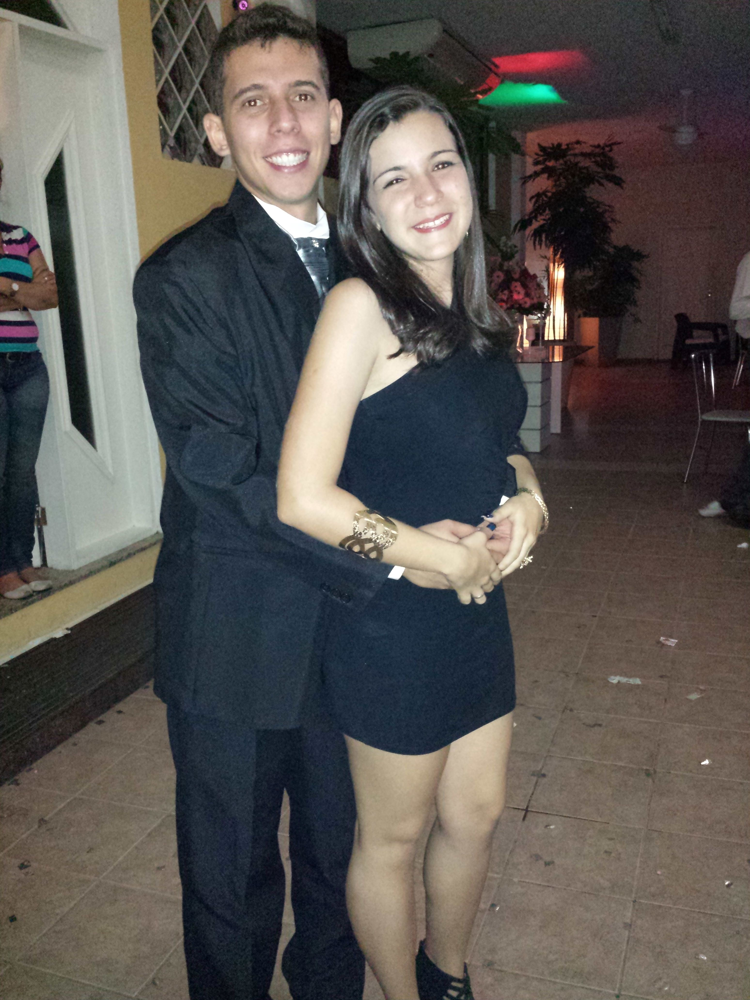
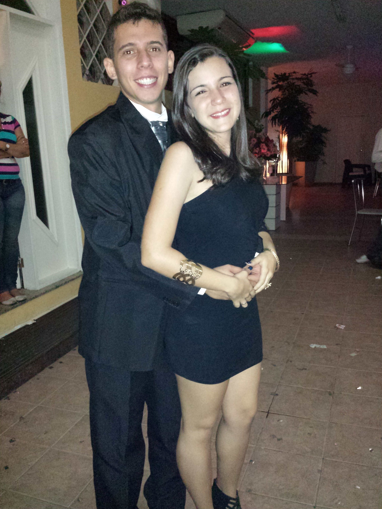


 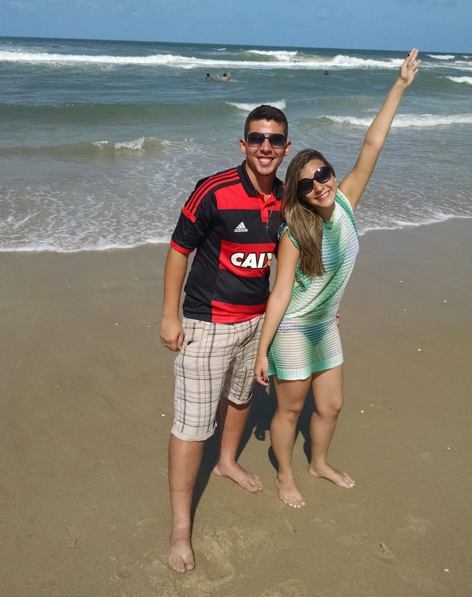
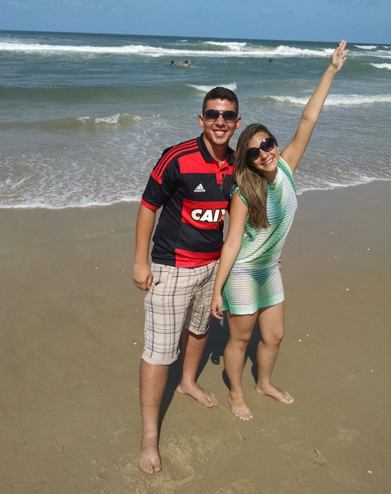


 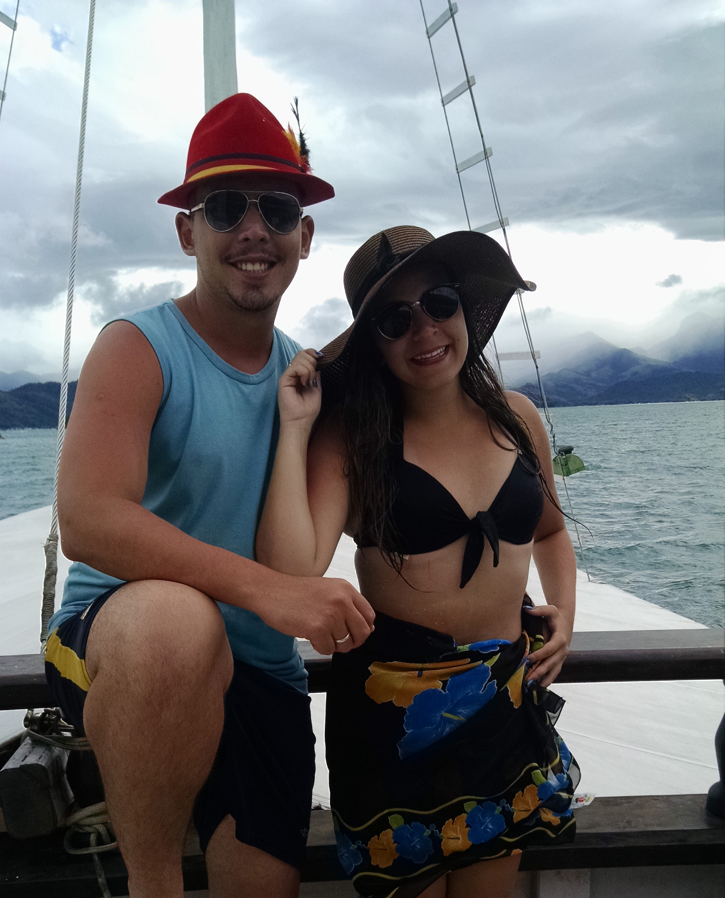
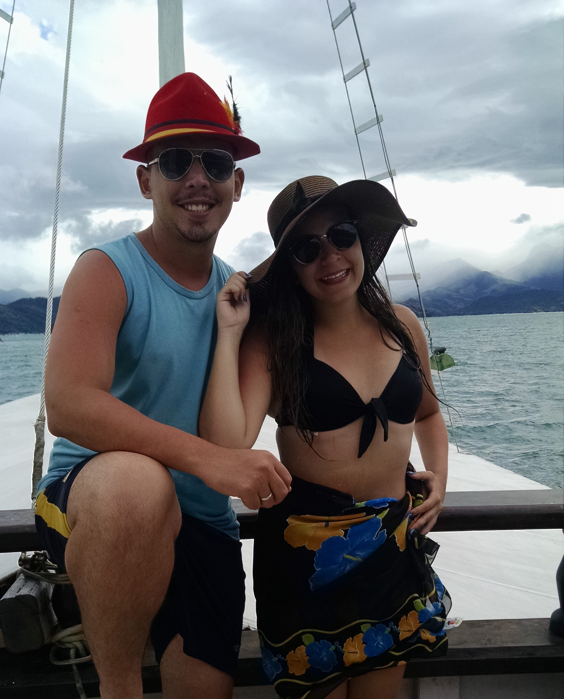


 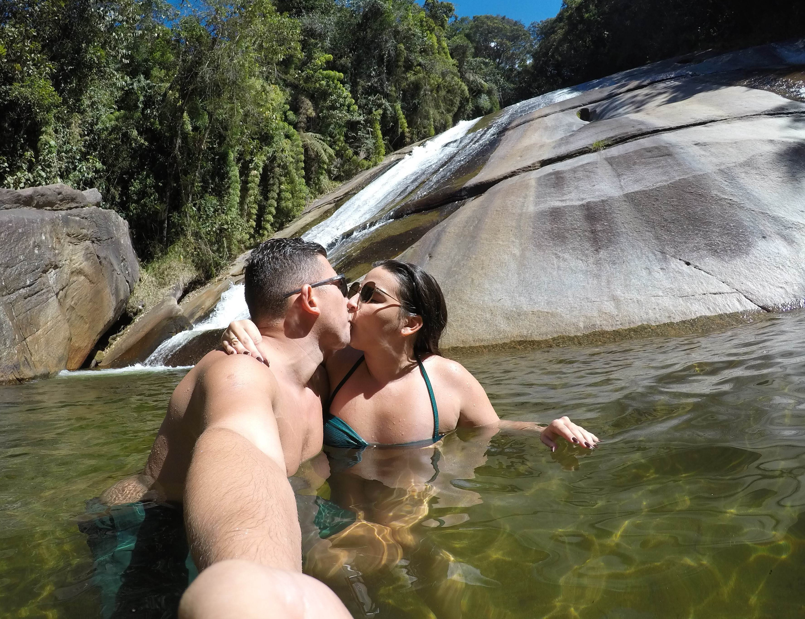
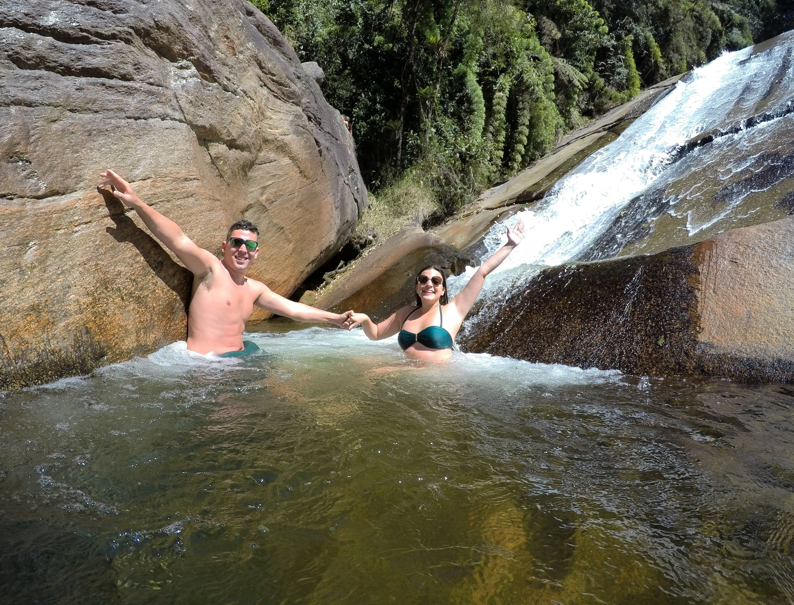
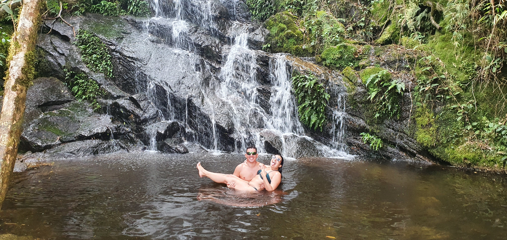
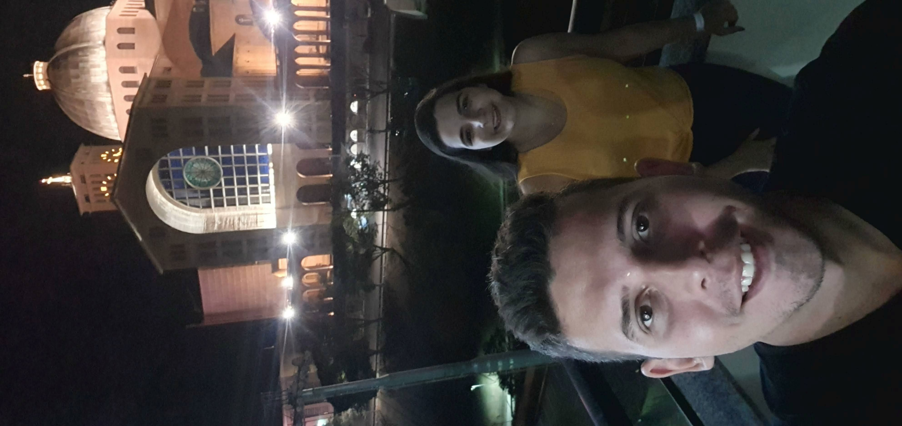
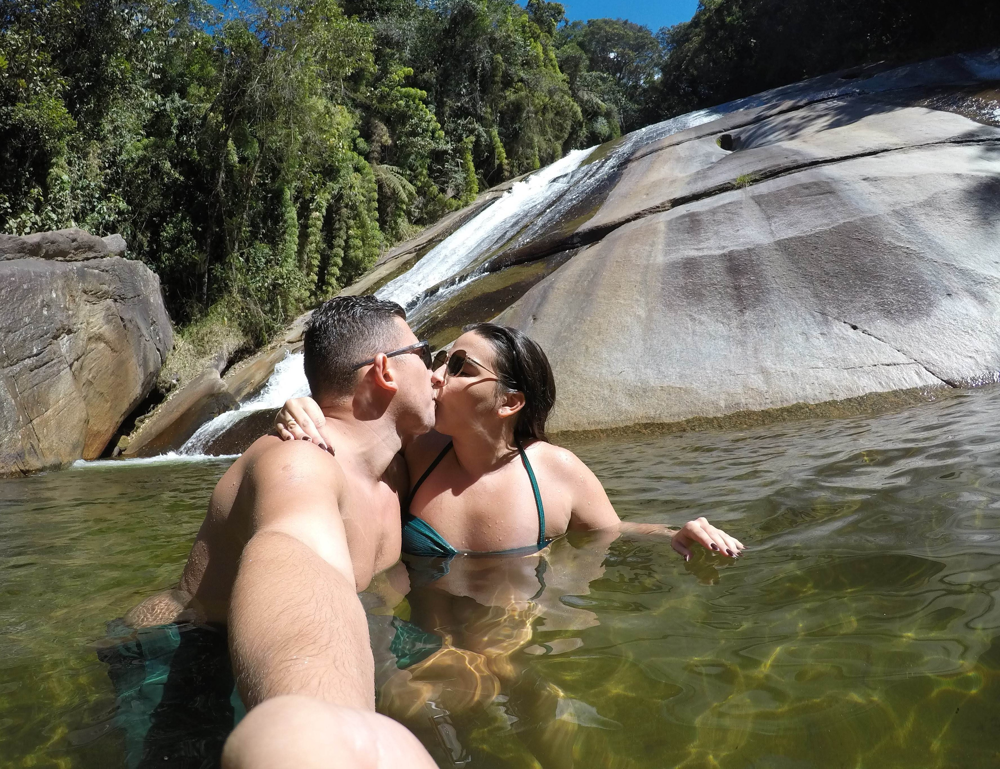
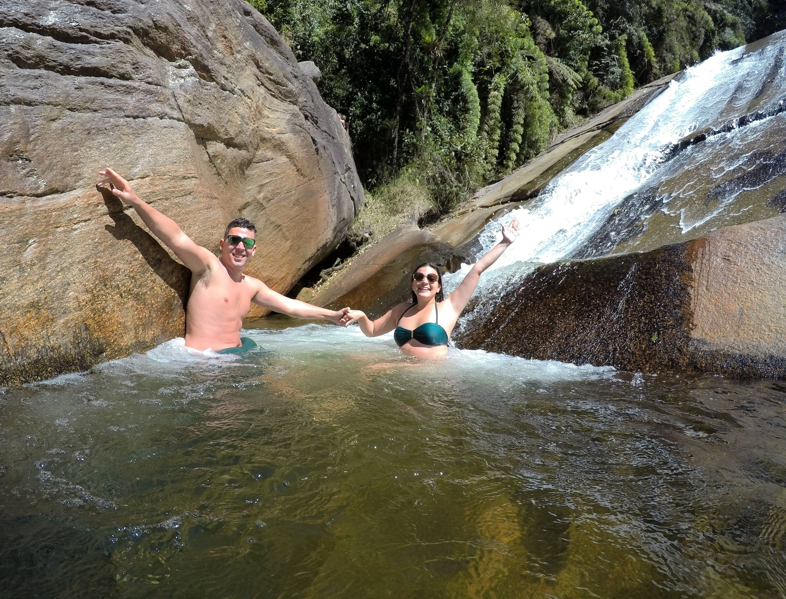
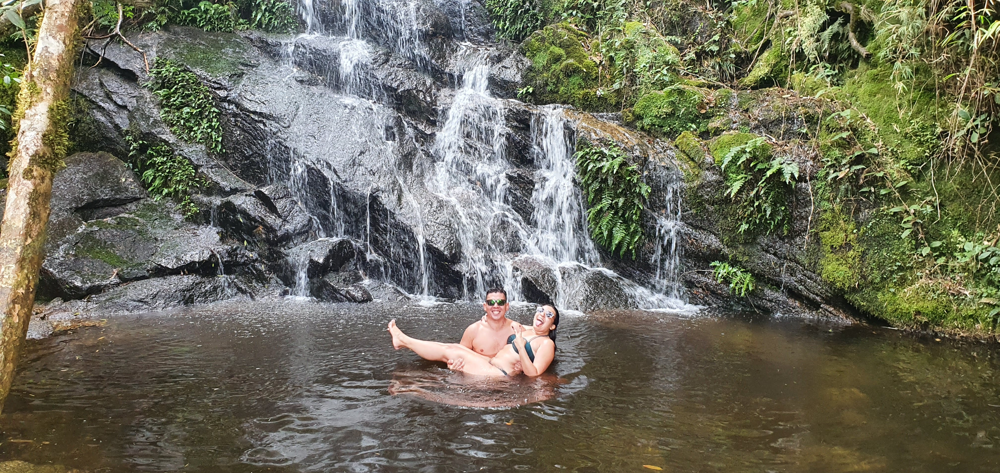
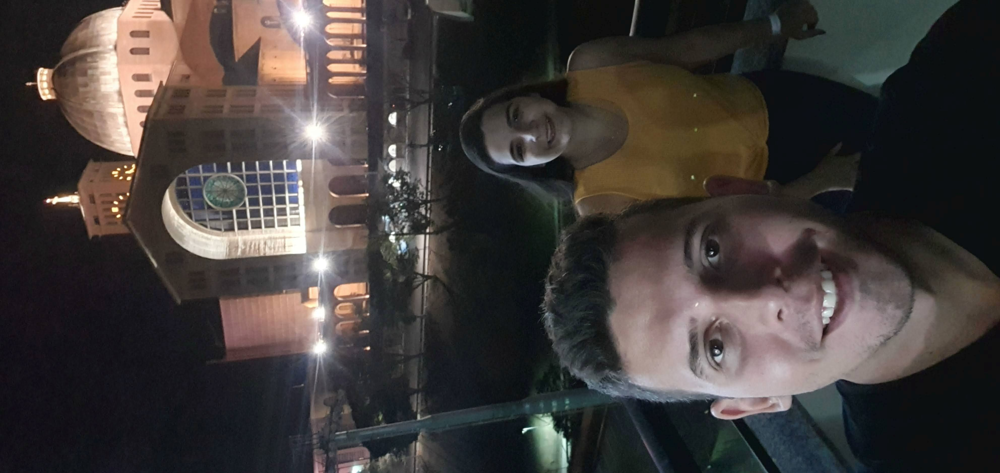


×